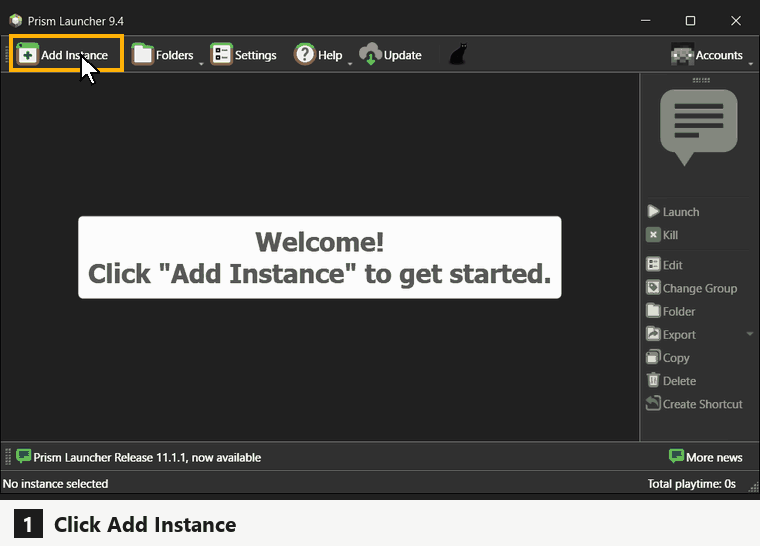
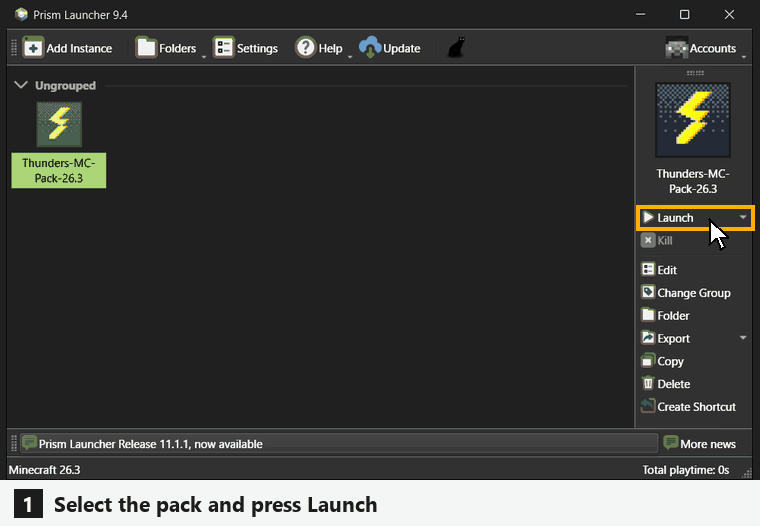
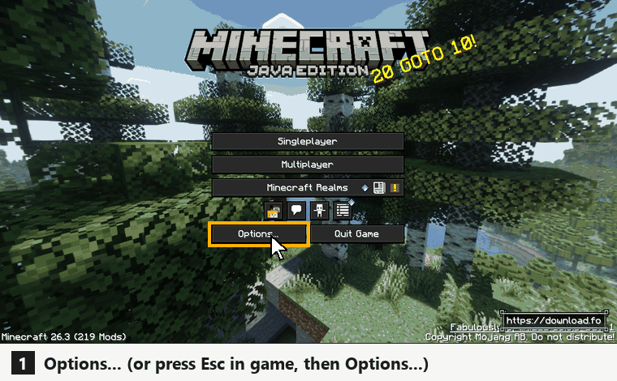

Minecraft 26.3 · Fabric
ThundersMC Pack
macOS: Apple Silicon (M1 or newer). Windows: any system. Ask Thunder for the password.
Four steps
-
1
Get Prism
Install Prism Launcher, open it and sign in with the Microsoft account that owns Minecraft Java Edition: Accounts > Manage Accounts > Add Microsoft.
You don't need to install Java. Prism downloads it; say yes if it asks.

-
2
Download the pack
Press macOS or Windows above and type the password. You get one zip file (about 2 MB). Don't unzip it.

Same on a Mac: press macOS. -
3
Import the pack
In Prism click Add Instance, choose Import on the left, press Browse, pick the zip and click OK. You can also drag the zip onto the Prism window.

Windows shown. Prism looks the same on a Mac. -
4
Play
Select Thunders-MC-Pack-26.3 (Windows) or Thunders-MC-Pack-26.3-Mac (Mac) and press Launch. The first time, a progress bar downloads about 200 MB of mods. Let it finish. Then open Multiplayer: Thunder's Server is already in the list.
Thunder has to whitelist your Minecraft username before you can join.

Windows shown. On a Mac it is the same.
Shaders
-
Windows: Photon or MakeUp
Photon is on by default and looks the best, but it needs a decent graphics card. MakeUp is the lightweight one for laptops and older PCs. Both have the same clouds and weather as everyone else on the server.
To switch: Options... > Video Settings..., type shader in the search box, click Iris, pick a shader and press Done. Click Shaders: Enabled to play without shaders.
In a world, press Esc first, then Options.... It switches straight away.

Windows. MakeUp selected here. -
macOS: Metal Shaders or none
Macs use Metal Shaders, made for Apple Silicon. It is on by default. You can also play without shaders for more FPS.
To switch: press Esc, click Shaders..., then click Shaders: On so it says Shaders: Off (or the other way round). Quit and start the game again for it to take effect. Your shader settings are kept for next time.
The same Shaders... screen has the look settings (style, brightness, clouds, water) while shaders are on.